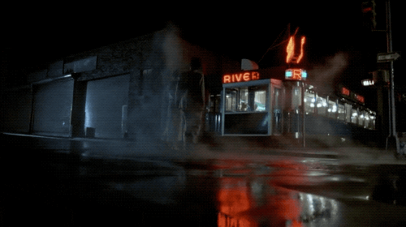
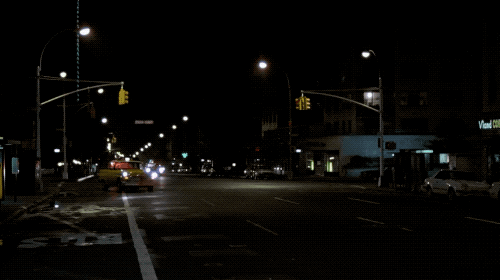

After Hours(1985) directed by Martin Scorsese
(Personally reviewed by Brandon Contreras)
A few scenes I enjoyed from Paul being incased by paper mache and taking a second to see the streets at night.
The "Ballhaus" shot that shows a level of creativity on a low budget for the time.

Protagonist Paul Hackett is driven by a taxicab from hell to the dangerous and strange part of Soho, New York because of a fling with a girl he met at a diner. Put into the Hitchcock plot-device of the "man falsely accused and dramatic suspense", Paul is put into bizarre situations that put a prevent him from being able to leave Soho in the after hours of the night. Starting from the mundane 9 to 5 job, Paul wants to find some excitement and the opportunity with a beautiful woman proves to be enough to venture out to the underbelly called Soho. Finding himself in situations that prevent him from leaving Soho, that same taxicab ride was a one-way ticket as his only 20$ dollar bill flies out the window. 50 cents aren’t enough to cover a train ride as the cost goes up to 75 cents, when it’s 12 pasts. Then the rest of the neighborhood thinks he's the thief stealing from lofts and chases him around the street and over. The making of After Hours was a chance for its director to return to his roots. Scorsese was in a tough spot after his project "The Last Temptation of Christ" had gone under, but his direction of After Hours helped him relearn and rediscover his love for film. After Hours provides a thrilling ride from all sides of the cinematic spectrum from a dark comedy to a thrilling suspense of bizarre situations and a stroke of bad luck.
My favorite scenes of Paul trying to leave Soho and the aftermath to where he comes back to where he started.
The taxi cab from hell that kicks off the chain of insanity.